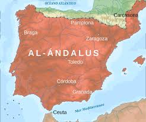

Al-Andalus
Den muslimska närvaron på Iberiska halvön mellan 711 och 1492.

Historia
Al-Andalus etablerades efter den muslimska invasionen 711 och blev ett centrum för handel och kultur.
Läs mer...
Kultur
Al-Andalus blev känt för arkitektur, konst, vetenskap och filosofi under medeltiden.
Läs mer...
Vetenskap
Universitet och bibliotek i Al-Andalus bidrog till spridningen av kunskap i Europa.
Läs mer...